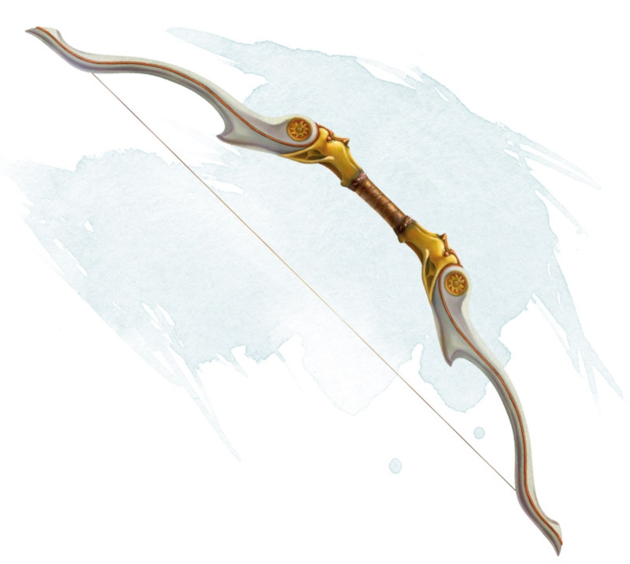

Arc du serment
[ Oathbow ]
Arme (arc long), très rare (nécessite un lien)
Quand vous encochez une flèche à la corde de cet arc, il murmure en elfique : « Prompte défaite à mes ennemis ». Lorsque vous faites une attaque à distance avec cet arc vous pouvez dire en tant que phrase de commande : « Prompte mort à ceux qui m'ont fait du tort ». La cible de votre attaque devient votre ennemi juré jusqu'à ce qu'il meure ou jusqu'à l'aube sept jours plus tard. Vous ne pouvez avoir qu'un seul ennemi juré à la fois. Quand votre ennemi juré meurt, vous pouvez en choisir un nouveau après la prochaine aube.
Lorsque vous effectuez une attaque à distance contre votre ennemi juré avec cette arme, vous avez un avantage au jet d'attaque. De plus, votre cible ne bénéficie d'aucun abri s'il n'est pas total, et vous ne souffrez pas de désavantage dû aux tirs à longue portée. Si l'attaque touche, votre ennemi juré subit 3d6 dégâts perforants supplémentaires.
Tant que votre ennemi juré est en vie, vous avez un désavantage aux jets d'attaque avec toutes les autres armes.
Lorsque vous effectuez une attaque à distance contre votre ennemi juré avec cette arme, vous avez un avantage au jet d'attaque. De plus, votre cible ne bénéficie d'aucun abri s'il n'est pas total, et vous ne souffrez pas de désavantage dû aux tirs à longue portée. Si l'attaque touche, votre ennemi juré subit 3d6 dégâts perforants supplémentaires.
Tant que votre ennemi juré est en vie, vous avez un désavantage aux jets d'attaque avec toutes les autres armes.
Dungeon Master´s Guide (SRD)
